12/04/2019 — Khoảng trễ giữa OMI và STEMI lại cướp đi thành trước của thêm một bệnh nhân
Bản dịch tiếng Việt của bài "The delay between OMI and STEMI claims yet another patient’s anterior wall" – Dr. Smith’s ECG Blog. Giữ nguyên toàn bộ 16 hình ảnh của bản gốc.
Bài viết của Pendell Meyers, có chỉnh sửa của Steve Smith
Một phụ nữ cao tuổi bị tăng huyết áp (HTN) đến khám vì đau ngực bên trái, từng lúc trong tuần qua nhưng nặng hơn trong giờ vừa qua, kèm khó thở. Bà không có tiền sử bệnh động mạch vành (CAD) đã biết.
Đây là điện tâm đồ lúc đến viện của bà, ghi lúc 2210:

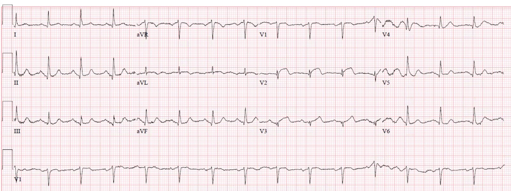
Đây là một nhồi máu cơ tim do tắc (OMI) thành trước khá rõ ràng, với ST chênh lên (STE) ở V2 kèm sóng T tối cấp ở V2-V3, tuy nhiên đáng tiếc là nó không đạt tiêu chuẩn STEMI vì không đủ STE ở V1 hoặc V2 để có hai chuyển đạo liên tiếp. Có một ít STE dạng vòm (coving), lồi ở aVL kèm sóng T đảo ngược ở phần cuối. Cũng có sóng Q bắt đầu hình thành ở V2-3.
Điện tâm đồ đầu tiên được kéo giãn theo chiều dọc để phóng to QRS:

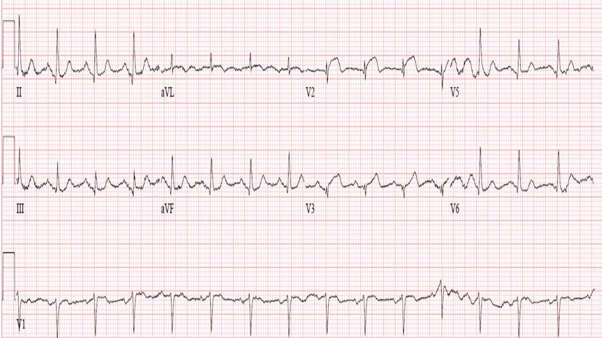
Bác sĩ đã đề nghị hội chẩn để thông tim cấp cứu, tuy nhiên bác sĩ tim mạch không bị thuyết phục bởi các dấu hiệu trên điện tâm đồ. Thông tim cấp cứu không được thực hiện, thay vào đó bệnh nhân được nhập đơn vị chăm sóc mạch vành (CCU). Heparin và các thuốc kháng tiểu cầu khác không được bắt đầu vào thời điểm này mà không rõ lý do.
Troponin T ban đầu tăng đáng kể, ở mức 0.51 ng/mL.
Một giờ sau, lúc 2322, đây là điện tâm đồ của bà:

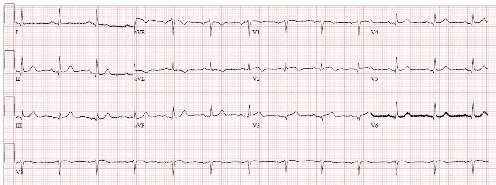
Các lần đo troponin liên tiếp tiếp tục tăng. Tuy nhiên bệnh nhân không được đưa vào phòng thông tim (cath lab) vì các điện tâm đồ này được diễn giải là không đạt tiêu chuẩn STEMI.
Không rõ lúc này cơn đau còn tiếp diễn hay không, tuy nhiên cực kỳ khó có chuyện các điện tâm đồ liên tiếp được ghi suốt đêm cho một bệnh nhân nội trú không triệu chứng, người mà bác sĩ tim mạch đã quyết định không thông tim cấp cứu. Bệnh nhân cũng được dùng morphin, điều khó xảy ra ở một bệnh nhân không triệu chứng. Do đó nhiều khả năng đau ngực vẫn đang tiếp diễn.
Một điện tâm đồ ghi lại khác lúc 0351, khi một lần đo troponin nữa tiếp tục tăng:

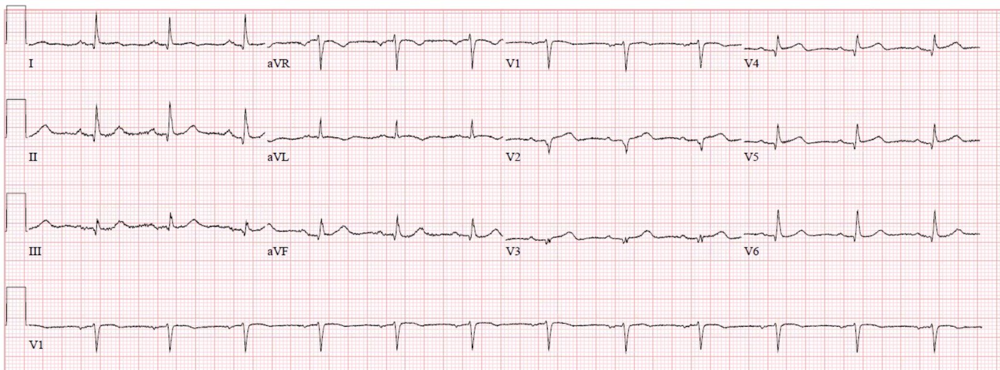
Cuối cùng heparin cũng được bắt đầu vào thời điểm này, khoảng 4 giờ sáng.
Một bản ghi lại khác lúc 0536:

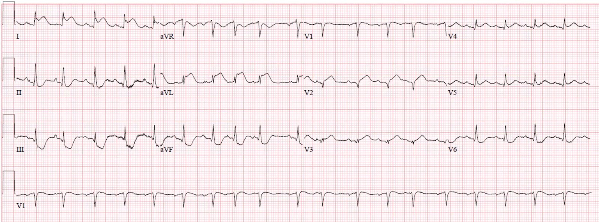
Vì điện tâm đồ cuối cùng đã đạt tiêu chuẩn STEMI, bệnh nhân cuối cùng cũng được đưa vào phòng thông tim.
Phát hiện tắc 100% do huyết khối ở LAD đoạn giữa và đã đặt stent mở thông, với dòng chảy TIMI trước và sau can thiệp lần lượt là 0 và 3.
Đây là các hình chụp mạch vành:

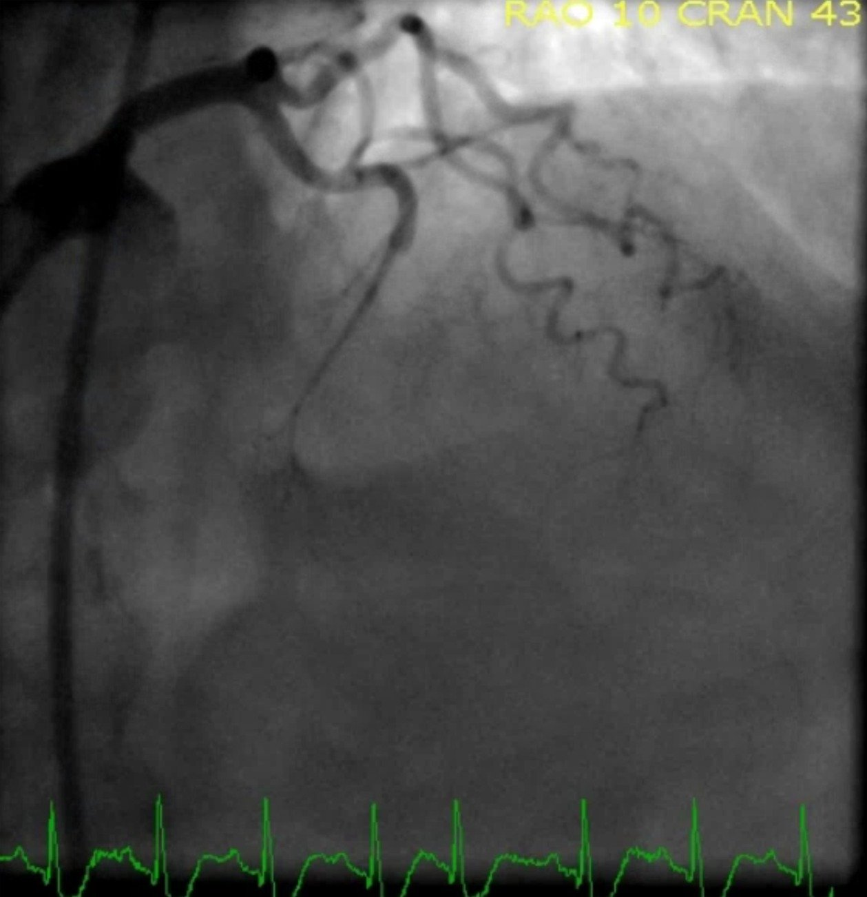

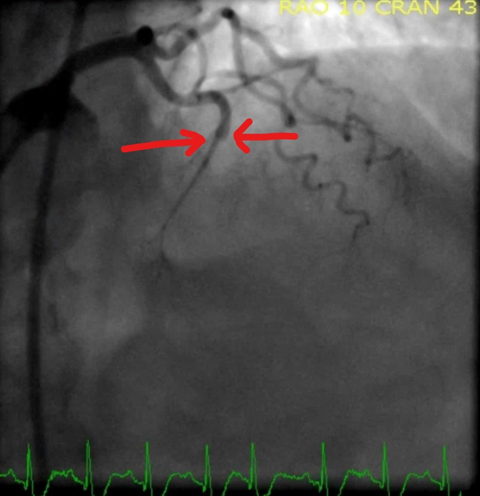

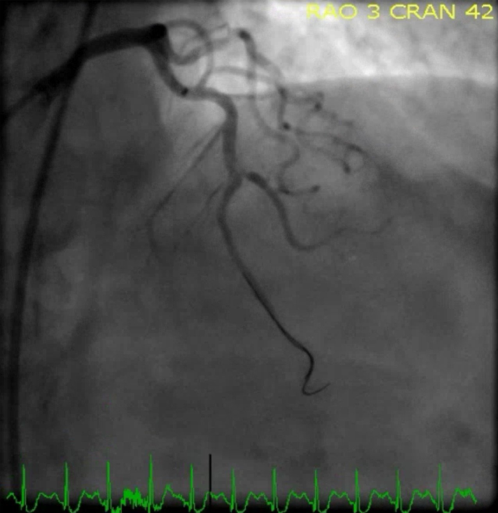

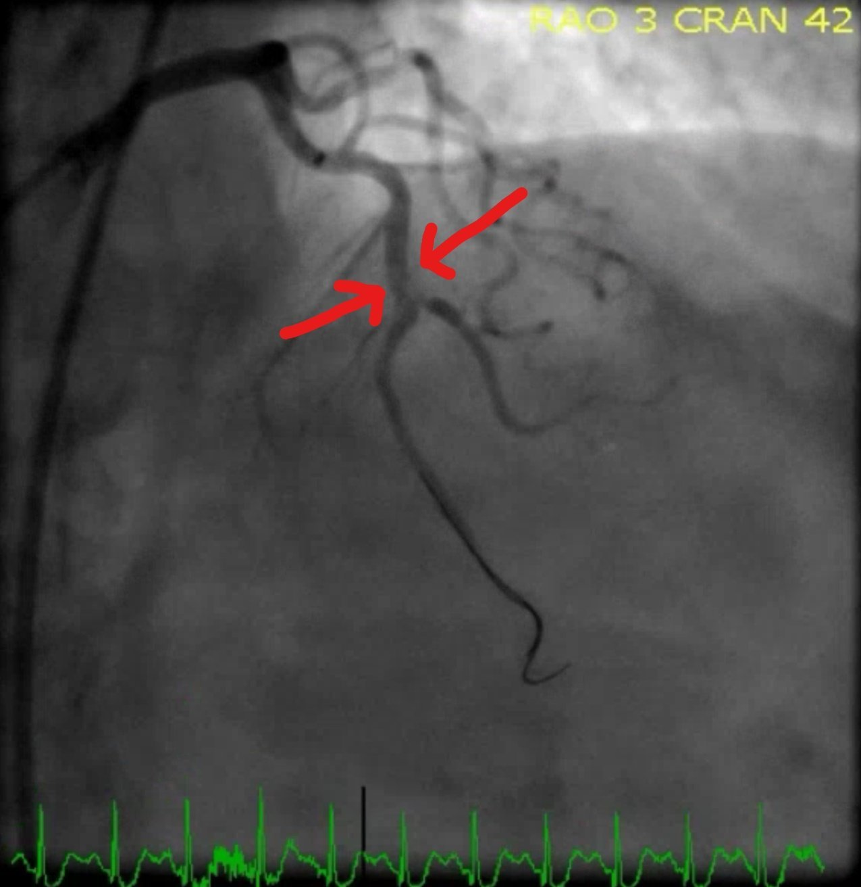

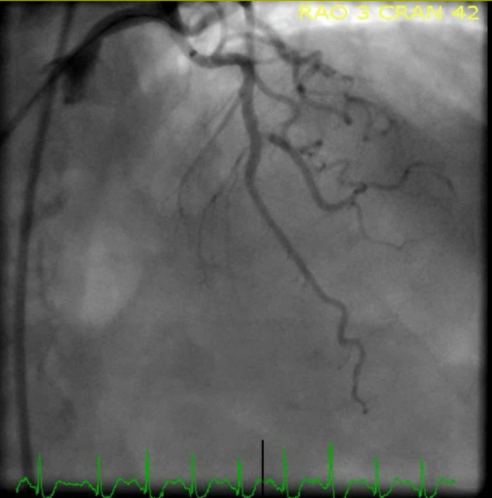
Đây là điện tâm đồ của bà ngay sau thông tim:

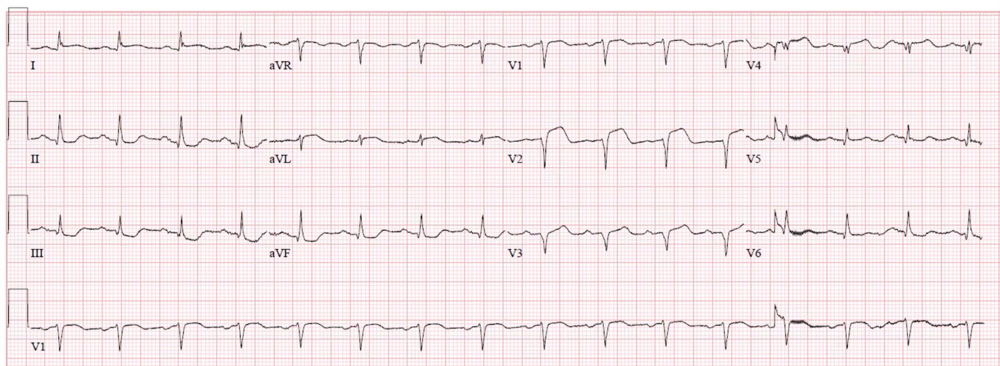
Điện tâm đồ vào cuối ngày hôm đó:

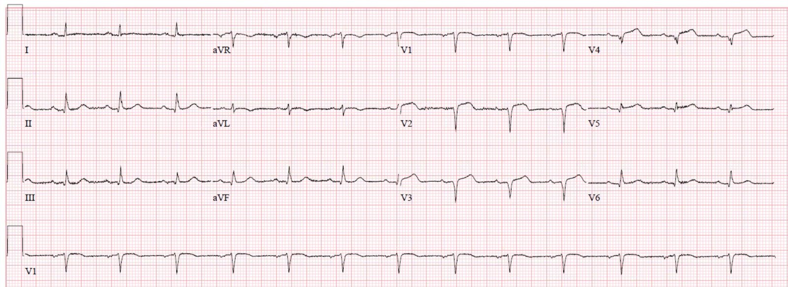
Troponin T đỉnh khoảng 3.5 ng/mL. Sóng QS với mức troponin cao như vậy (trong nghiên cứu gần đây nhất của tôi, troponin T đỉnh trung bình của các STEMI rõ ràng là 3.19 ng/mL) rất khó là biểu hiện của choáng cơ tim (myocardial stunning), mà nhiều khả năng hơn hẳn là biểu hiện của nhồi máu xuyên thành không hồi phục.

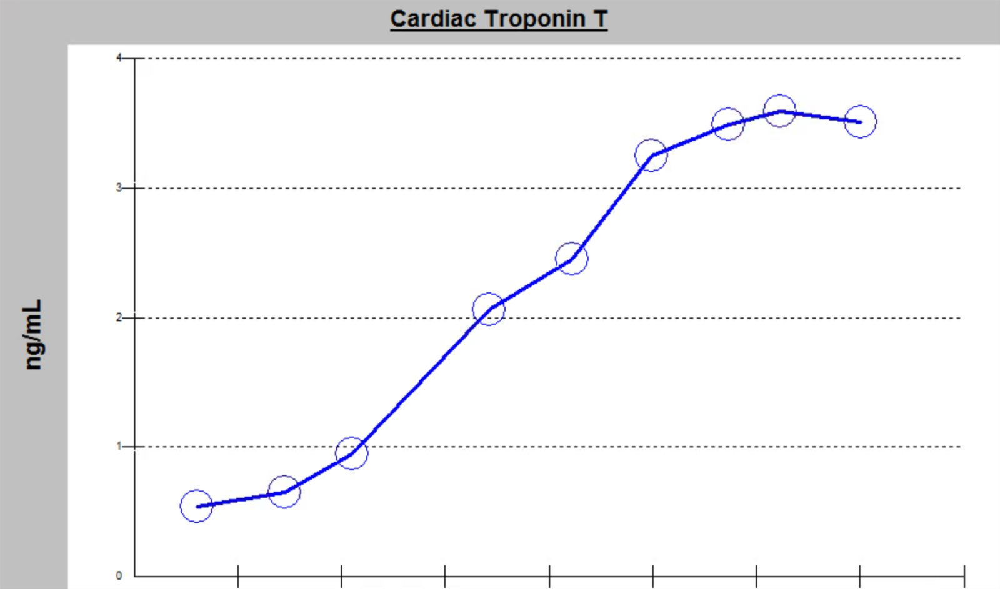
Siêu âm tim ngày hôm sau cho thấy rối loạn vận động thành ở các vùng trước, bên, vách và mỏm. Phân suất tống máu (EF) lúc đó là 38%.
Những điểm cần học:
Thường có một khoảng trễ đáng kể giữa điện tâm đồ đầu tiên chẩn đoán được nhồi máu cơ tim do tắc (Occlusion MI) và thời điểm xuất hiện tiêu chuẩn STEMI, trong khoảng thời gian đó bệnh nhân mất một lượng cơ tim đáng kể.
Bằng chứng thiếu máu cục bộ đang tiếp diễn (dù là đau ngực tiếp diễn, troponin tăng dần, hay bằng chứng thiếu máu cục bộ tiếp diễn trên điện tâm đồ) bất chấp điều trị nội khoa tối đa thì bắt buộc phải thông tim cấp cứu theo các hướng dẫn NSTEMI hiện hành của chúng ta.
Bạn phải đấu tranh vì những bệnh nhân bị nhồi máu cơ tim do tắc (Occlusion MI) của mình, bởi vì mô hình hiện nay của chúng ta không làm điều đó.

===================================
Bình luận của KEN GRAUER, MD (12/4/2019):
===================================
Người ta có thể nghĩ rằng lẽ ra không còn cần đến những ca như ca này nữa = Chỉ là mơ tưởng … Việc vào năm 2019 mà một bác sĩ tim mạch hội chẩn vẫn phủ nhận sự cần thiết (và lợi ích tiềm năng thu được) của thông tim sớm cho người phụ nữ cao tuổi trong ca này — bất chấp điện tâm đồ ban đầu của bà, kết hợp với bệnh sử đau ngực mới khởi phát trong tuần qua (rõ ràng nặng hơn trong 1 giờ trước đó) + khó thở mới xuất hiện cho chúng ta thấy còn bao nhiêu việc vẫn cần phải làm đối với các bác sĩ lâm sàng có trách nhiệm nhận diện OMI cấp (kể cả các bác sĩ tim mạch! ).
- Tôi tập trung bình luận vào việc diễn giải điện tâm đồ của 2 bản ghi đầu tiên trong ca này. Để cho rõ — tôi đã đặt chúng cạnh nhau trong Hình 1.

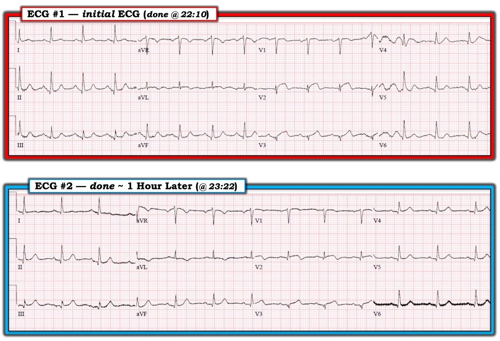
=================
Người phụ nữ cao tuổi trong ca này KHÔNG có tiền sử bệnh mạch vành đã biết. Các triệu chứng đau ngực “từng lúc” của bà bắt đầu trong tuần trước đó — rõ ràng trở nên nặng hơn trong một giờ ngay trước khi bà đến khoa cấp cứu (ED).
CÂU HỎI: Nhìn vào điện tâm đồ #1 trong Hình 1 — Có điều gì trên bản ghi này gợi ý rằng bà có thể đã có một biến cố thứ 1 (tức là nhồi máu) sớm hơn trong tuần — và nay đến viện với tình trạng lan rộng của ổ nhồi máu trước đó không?
- GỢI Ý: Có bao nhiêu chuyển đạo trên điện tâm đồ #1 có sóng Q?
TRẢ LỜI: Lý do tôi ưa dùng mẹo ghi nhớ “Thay đổi Q–R–S–T” như một phần trong Cách tiếp cận hệ thống của tôi khi diễn giải điện tâm đồ — là vì làm như vậy giúp tôi không bỏ sót những chuyển đạo nào có sóng Q — và — giúp tôi không bỏ sót việc tăng tiến sóng R có bình thường hay không.
- Trên điện tâm đồ #1 — các sóng Q thật sự có mặt, dù nhỏ, ở các chuyển đạo I, II, III; aVF; và V2 đến V6 (tức là ở không dưới 9 trên 12 chuyển đạo! ).
- Đúng là các sóng q nhỏ và hẹp có thể bình thường gặp ở một hoặc nhiều chuyển đạo thành bên (tức là các chuyển đạo I, aVL; V4, V5, V6) — và đôi khi cũng bình thường ở một hoặc nhiều chuyển đạo thành dưới (tức là các chuyển đạo II, III, aVF) — nhưng các sóng Q mà chúng ta thấy ở chuyển đạo V2 và V3 trên điện tâm đồ #1 chắc chắn là không bình thường!
- Ngoài vị trí thành trước của chúng — những lý do khiến các sóng Q ở chuyển đạo V2 và V3 không bình thường gồm: i) Có mất sóng r khi đi từ chuyển đạo V1 sang V2; ii) Ở 2 chuyển đạo này, vốn có phần âm chiếm ưu thế — có phức bộ ba pha (qrS), hình dạng của nó gợi ý mạnh rằng đã có nhồi máu vào một thời điểm nào đó; và, iii) Với biên độ QRS rất nhỏ ở 2 chuyển đạo này — sóng Q ở chuyển đạo V2 và V3 vừa tương đối sâu vừa tương đối rộng!
- ĐIỀU CỐT LÕI: Dù cần ghi nhận một điểm mà Dr. Smith đã nhiều lần nhấn mạnh = rằng sóng Q nhồi máu mới đôi khi có thể hình thành RẤT sớm sau khi tắc mạch vành cấp (tức là sớm ngay trong giờ thứ 1 sau khi tắc cấp!) — rõ ràng vẫn có khả năng bệnh nhân trong ca này đã có một biến cố thứ 1 (nhồi máu) từ vài ngày trước, khi các triệu chứng của bà bắt đầu — và nay đang cho thấy dấu hiệu lan rộng cấp của ổ nhồi máu ban đầu đó. — Ghi chú cá nhân: Với tư cách một bác sĩ điều trị chính (Attending) chuyên ngành chăm sóc ban đầu trong 30 năm — tôi đã gặp nhiều ca bệnh nhân lớn tuổi chỉ đến trung tâm y tế ngoại trú của chúng tôi vài ngày (hoặc lâu hơn) sau khi khởi phát các triệu chứng mà ban đầu họ phớt lờ — với điện tâm đồ cho thấy một biến cố gần đây (nhưng không cấp).
=================
Bất kể tiêu chuẩn số đo cho STEMI cấp có được thỏa mãn hay không — và bất kể bệnh nhân này có một biến cố ban đầu sớm hơn trong tuần hay không — tình trạng nặng lên mới khởi phát của các triệu chứng (mà theo mô tả ca bệnh cần dùng morphin để giảm đau) + các dấu hiệu thiếu máu cục bộ cấp trên điện tâm đồ mà chúng ta thấy ở điện tâm đồ #1 lẽ ra phải là quá đủ để thông tim sớm với mục tiêu tái tưới máu cấp (Xem Điểm cần học thứ 2 ở cuối phần bàn luận của Dr. Meyers).
- KHÔNG thể nào mà đoạn ST dạng vòm ( = hình dạng “mặt mếu”) ở chuyển đạo V2 trên điện tâm đồ #1 lại không phải là cấp tính. Và vì phần đầu của đoạn ST chênh lên này tròn đến mức đó — có thể có tới 2 mm ST chênh lên tại điểm J (mà xét đến biên độ QRS rất nhỏ, thì cao bằng chính sóng R ở V2).
- Theo một nghĩa nào đó, chuyển đạo aVL có “liên tiếp” với chuyển đạo V2 (tức là vùng tim được 2 chuyển đạo này quan sát có phần chồng lấp) — và, chúng ta thấy ST dạng vòm tương tự kèm ST chênh lên nhẹ ở chuyển đạo aVL trên điện tâm đồ #1.
- 3 phức bộ QRS mà chúng ta thấy ở chuyển đạo V3 đều có hình dạng ST-T hơi khác nhau. Hình dạng nào là hình dạng “thật”? Bất kể thế nào — sóng T của mỗi phức bộ trong 3 phức bộ này rõ ràng là tối cấp (cao không tương xứng) so với biên độ sóng r rất nhỏ của từng phức bộ ở chuyển đạo này.
- ĐIỂM CUỐI CÙNG: Tôi nghi ngờ có đặt sai vị trí điện cực ở một hoặc nhiều chuyển đạo ngực phía trước trên điện tâm đồ #1. Tôi nói vậy vì: i) Với ST dạng vòm ở chuyển đạo liên tiếp aVL — tôi sẽ kỳ vọng đoạn ST ở chuyển đạo lân cận V3 có hình dạng tương tự (trừ khi có tắc cấp nhánh chéo thứ 1 của LAD — khi đó chuyển đạo aVL và V2 có thể là những chuyển đạo duy nhất có ST chênh lên); ii) Việc thấy sóng R = 2 mm ở chuyển đạo V2 — rồi giảm xuống <1 mm ở V3 — nhưng sau đó lại tăng trở lại ở chuyển đạo V4 (lên 5 mm) là trái ngược với tăng tiến sóng R sinh lý; và, iii) Sóng P không hề có ở chuyển đạo V2 — nhưng có biên độ hợp lý ở các chuyển đạo lân cận V1 và V3 — và điều này cũng không “hợp lý về mặt sinh lý”. LƯU Ý: Việc có thể có đặt sai vị trí điện cực của một hoặc nhiều chuyển đạo ngực trên điện tâm đồ #1 là điều đáng bàn — vì việc “thiếu tiêu chuẩn số đo” cho STEMI cấp dường như là lý do khiến bác sĩ tim mạch điều trị chính không thông tim sớm trong ca này — và — hoàn toàn có khả năng một điện tâm đồ ghi lại ngay sau khi kiểm tra cho đúng vị trí đặt điện cực ngực có thể đã cho ra một điện tâm đồ sẽ đạt tiêu chuẩn số đo STEMI.
=================
BÌNH LUẬN về điện tâm đồ #2: Một giờ sau — điện tâm đồ #2 được ghi. Mặc dù khó nói liệu thay đổi nhẹ hình thái QRS ở chuyển đạo V2 giữa điện tâm đồ #1 và điện tâm đồ #2 có phải là do vị trí đặt điện cực ngực hơi khác nhau hay không — quả thật dường như có một số dấu hiệu tiến triển cấp trên điện tâm đồ:
- Đoạn ST ở chuyển đạo V2 trên điện tâm đồ #2 chênh lên ít hơn, và sóng T đảo ngược đang hình thành.
- Có vẻ như mức ST chênh lên tại điểm J ở chuyển đạo V3 và V4 trên điện tâm đồ #2 tăng nhẹ so với điện tâm đồ #1.
- Mặc dù hình thái/trục QRS ở 6 chuyển đạo chi hầu như KHÔNG thay đổi giữa 2 bản ghi này — các sóng T ở chuyển đạo III là chủ yếu, nhưng cả ở chuyển đạo aVF nữa, trông tối cấp hơn trên điện tâm đồ #2 (tương đối cao hơn và phình to hơn ở đỉnh so với biên độ sóng R nhỏ ở từng chuyển đạo này).
- Lý tưởng — điện tâm đồ thứ 2 lẽ ra nên được ghi sớm hơn 72 phút sau điện tâm đồ thứ 1, vì các bác sĩ lâm sàng lẽ ra phải đang cân nhắc có chỉ định thông tim cấp hay không. Các thay đổi điện tâm đồ tiến triển cấp thường xuất hiện sớm hơn nhiều so với một giờ sau.
=================
ĐIỀU CỐT LÕI: Những Điểm cần học mà Dr. Meyers đưa ra (ở trên) đã nói lên tất cả:
- Chẩn đoán OMI cấp trên điện tâm đồ thường có thể thực hiện được nhiều giờ trước khi các tiêu chuẩn STEMI cấp “được chấp nhận” trở nên rõ ràng. NẾU bác sĩ tim mạch hội chẩn của bạn nằm trong số những người không nhận ra (hoặc không thừa nhận) OMI cấp trên điện tâm đồ ở một bệnh nhân đau ngực mới xuất hiện — ngay cả khi có bằng chứng thiếu máu cục bộ cấp — thì trách nhiệm thuộc về CHÍNH BẠN phải đấu tranh vì những bệnh nhân của mình có bằng chứng OMI cấp trên điện tâm đồ — bởi vì (như Dr. Meyers đã nói) — mô hình hiện nay của chúng ta vẫn chưa làm điều đó!
- Tôi xin BỔ SUNG Điểm cần học này: Nếu làm việc với một bác sĩ tim mạch không chấp nhận các dấu hiệu OMI cấp trên điện tâm đồ vì “tiêu chuẩn số đo” cho STEMI cấp không được đáp ứng — Hãy CẢNH GIÁC với các dấu hiệu gợi ý có thể có điện cực ngực bị đặt sai vị trí — vì một điện tâm đồ ghi lại ngay sau khi kiểm tra cho đúng vị trí đặt điện cực ngực có thể GIỜ ĐÂY sẽ thỏa mãn tiêu chuẩn STEMI vốn không biểu hiện khi điện cực bị đặt lệch …
====================
XEM THÊM:
- Để xem “Quan điểm của tôi” về việc sử dụng Cách tiếp cận hệ thống trong diễn giải điện tâm đồ — BẤM VÀO ĐÂY.
- Về Hình dạng đoạn ST (tức là hình dạng “mặt cười” so với “mặt mếu”) — BẤM VÀO ĐÂY (Vui lòng xem Bình luận của tôi ở cuối trang).